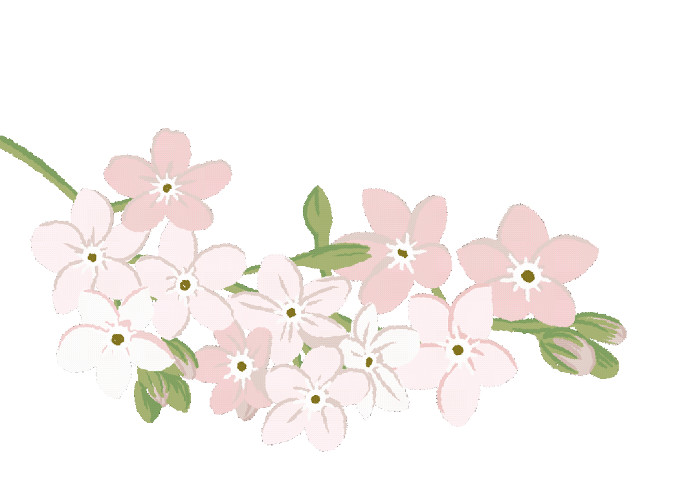
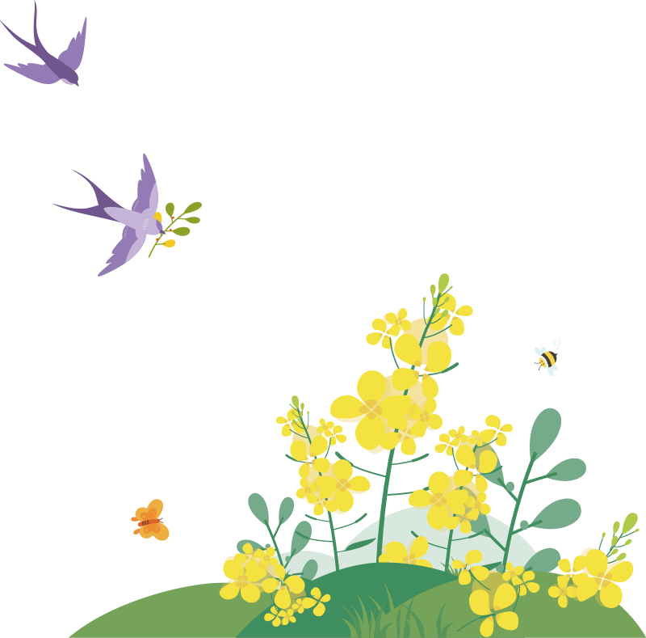
在为期五天的天津文化实践中，我仿佛置身于一场流动的时光盛宴，在历史与当下的交织中触摸着非遗文化的脉动。从天津博物馆里承载岁月的文物，到王氏泥塑工坊中温热的泥土，从杨柳青画室里晕染生活热望的年画，到风筝魏工坊里竹篾与绢纸的灵动——每一处体验都让我感受到历史的厚重与手艺的温度。那些精巧的面塑、鲜活的木版年画、温润的葫芦烙画、灵动的风筝，无不诉说着匠人的坚守与生活的诗意，让我深刻体会到非遗文化并非课本上的名词，而是融入日常的生活印记，是能触摸、能分享的鲜活存在。
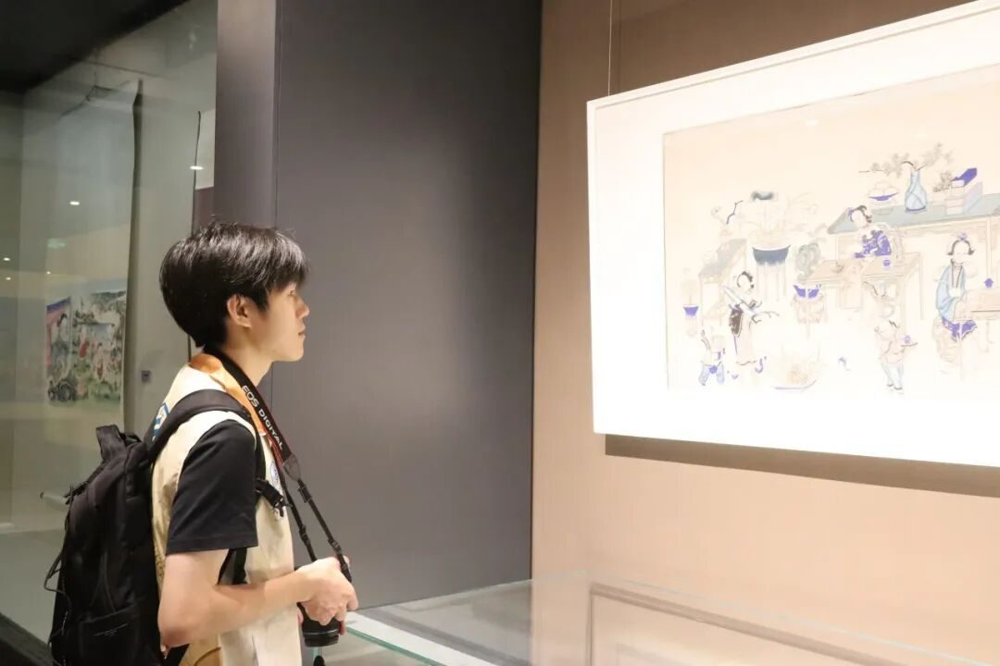
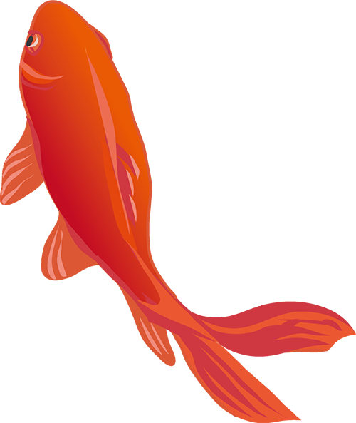
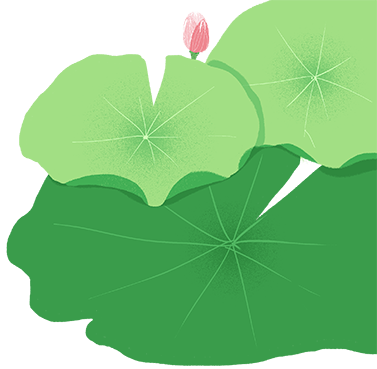
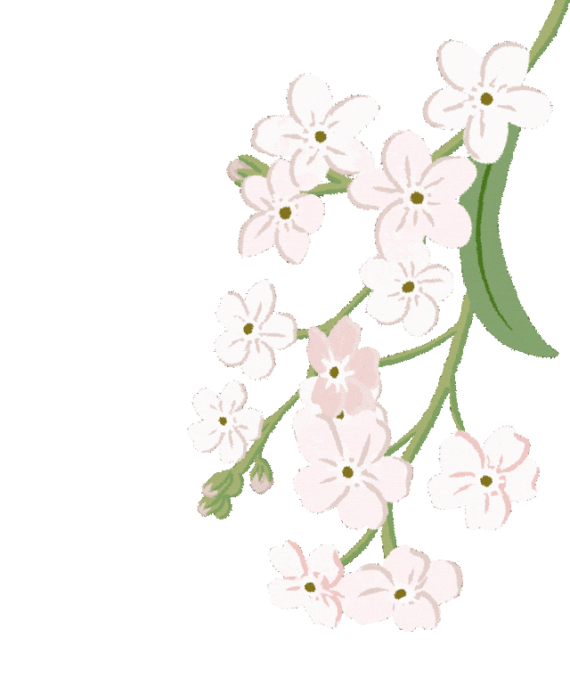
在实践过程中，我也真切体会到非遗传承的不易。捏制面塑时总难把握形神的分寸，烙画时稍不留意便烫出焦斑，绑扎风筝骨架时总找不准弧度的平衡——这些亲手实践的细节，让我读懂了传承人指尖功夫背后，是年复一年的专注与沉淀。在与传承人的交流中，我感受到他们对技艺的较真与热爱，也看到了这份坚守背后的重量：非遗的延续，不仅需要精湛的技法，更需要耐得住时光的定力，而资金的支撑、年轻人才的接续，仍是亟待回应的课题。
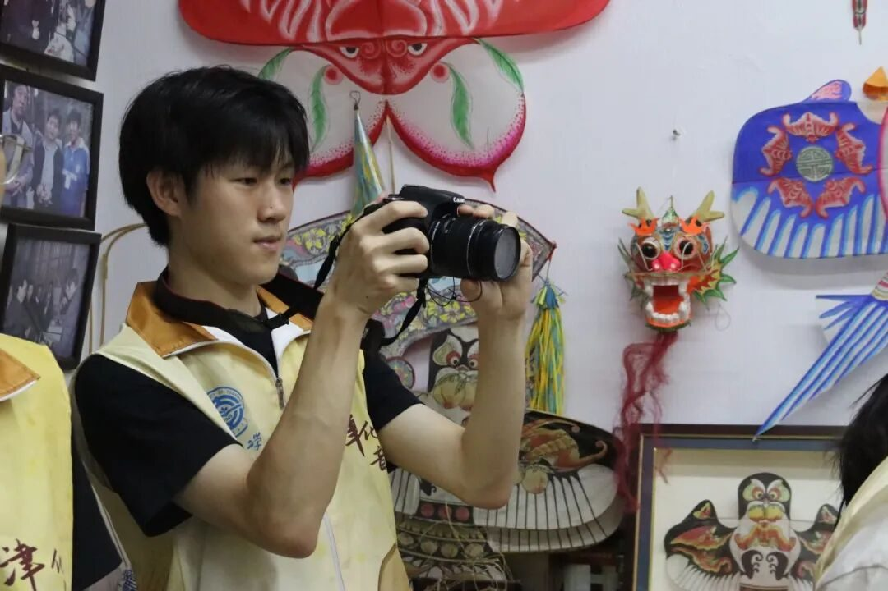
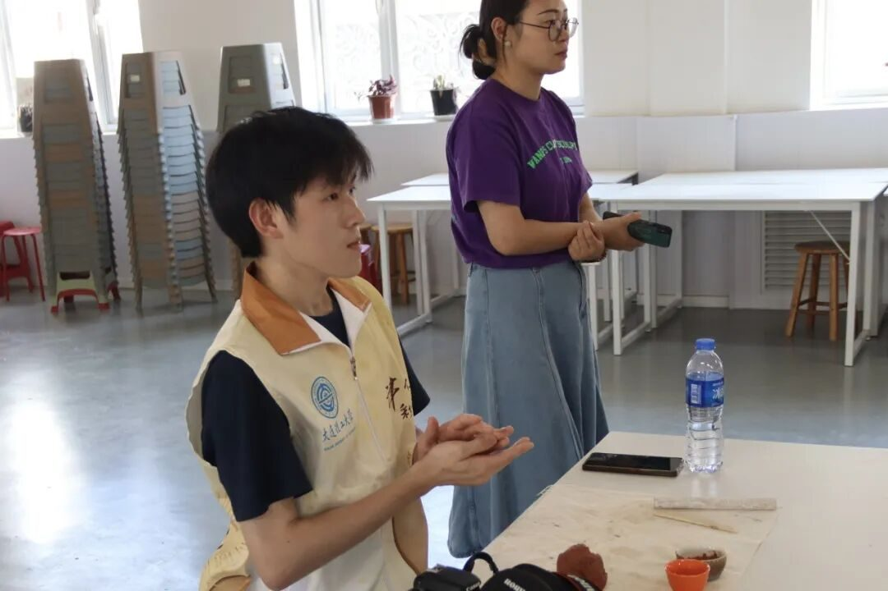
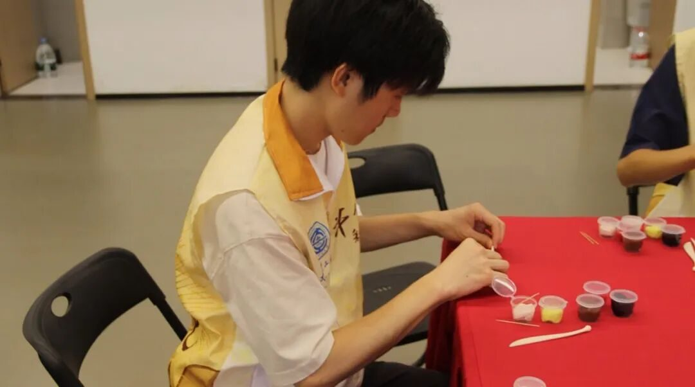
这次实践让我更加坚定了传承文化的责任与使命。无论是王琳杰老师笔下年画里的灵动笔触，还是魏国秋老师傅手中风筝骨架的精准分寸，都让我感受到非遗文化蓬勃的生命力。它们从不是玻璃柜里静止的标本，而是流淌在指尖的活态传承。我们不仅要守护这些藏着生活热忱的文化遗产，更要以亲手实践的温度去传播、去创新，让更多人读懂非遗里的故事与深情。唯有如此，这些带着时光印记的技艺才能在新时代继续生长，成为连接过去与未来的温暖桥梁。
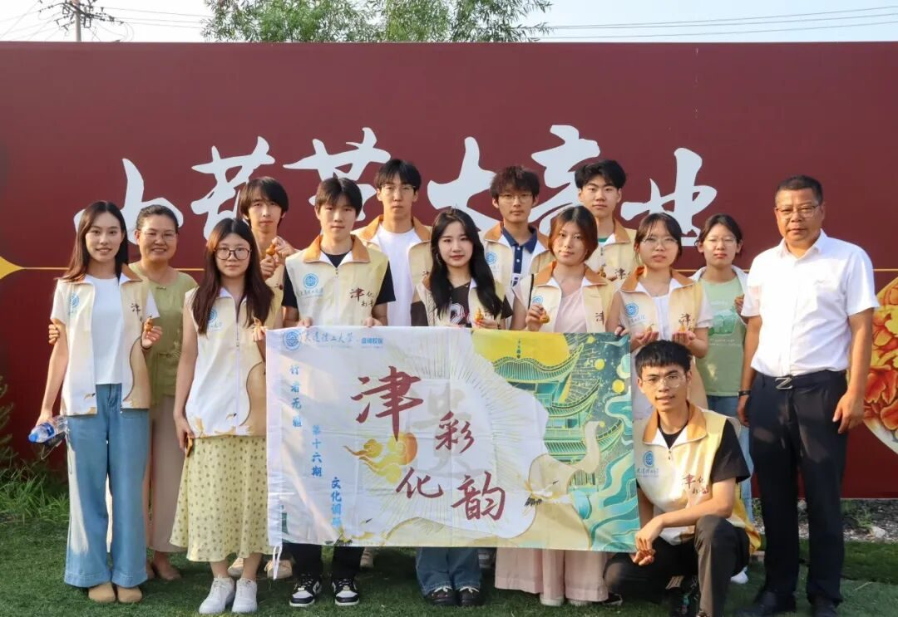
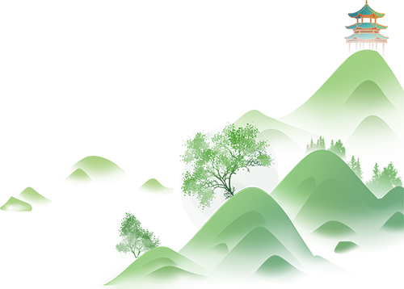
来源 | 行者无疆实践团
图片 | 行者无疆实践团
文字 | 张圣铭
编辑 | 张瑶琪
审核 | 杩健辉 张瑶琪 李凌志
责编 | 邹靓靓 周 亮